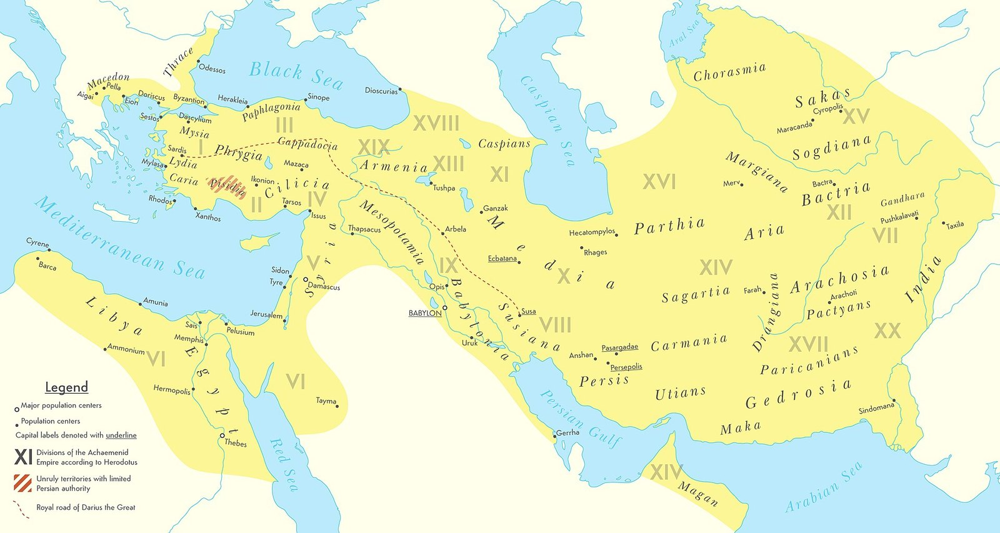

Crossing Persiaگذر از پارسDerbasbûna Farisê
17.11.2026۱۷.۱۱.۲۰۲۶17.11.2026
Last night, I came across a map of the Persian empire at its height. You know the one: Persia around 500 BCE, which stretches from Greece to Libya to India, and Afghanistan.
دیشو مه یک نقشه امپراتوری پارس ره دیدم. ای نقشه از وقتی اس که امپراتوری پارس بسیار کلان بود. تو ای نقشه ره میشناسی. پارس در حدود 500 پیش از میلاد اس. ای از یونان تا لیبیا، و تا هند و افغانستان میرسید.
Şeva borî, ez rastî nexşeya împaratoriya Farisî di lûtkeya wê de hatim. Hûn dizanin kîjan e: Farisê derdora sala 500 B.Z., ku ji Yewnanistanê heta Lîbyayê, Hindistanê û Efxanistanê dirêj dibe.

Although the Persian empire wasn’t technically the first empire, let’s just say it was. It basically was. Empires before the Persian empire were more like proto-empires. They were test runs. But something about the Persian empire was different. The Persian empire was the real deal. I mean, they’re still talking about the 300 Spartans in Greece and speaking Persian in Afghanistan to this day!
After glancing at this map for the millionth time in my life, it suddenly hit me how impossibly large this empire was. Quickly eyeballing it, it seems like the Persian empire was roughly about the size of the continental US. I just asked ChatGPT, and it said that the continental US is actually a bit bigger than the Persian empire was in 500 BCE, so who knows. It doesn’t matter. What matters is they didn’t have airplanes in Persia.
اگرچه امپراتوری پارس واقعا اولین امپراتوری نبود، اما بیا بگیم که بود. راستش همو بود. امپراتوری های پیش از پارس فقط مثل اولای امپراتوری بودن. اونا مثل امتحان بودن. اما یک چیز در امپراتوری پارس فرق داشت. امپراتوری پارس یک امپراتوری واقعی بود. یعنی تا حالی هم مردم در باره 300 اسپارتی در یونان گپ میزنن، و تا امرو در افغانستان فارسی گپ میزنن!
بعد از او که در زندگی خود شاید یک میلیون بار به ای نقشه سیل کدم، یک دفعه فامیدم که ای امپراتوری چقدر کلان بود. کلانیش باور کدنی نیست. اگه تیز چشمی سیل کنی، معلوم میشه که امپراتوری پارس تقریبا اندازه خاک اصلی آمریکا بود. مه همین حالی از ChatGPT پرسان کدم. او گفت که خاک اصلی آمریکا از امپراتوری پارس در 500 پیش از میلاد یک کم کلان تر اس. خو کی میفامه. مهم نیست. مهم ای اس که اونا در پارس طیاره نداشتن.
Her çend împaratoriya Farisî bi awayekî teknîkî ne împaratoriya yekem bû jî, bila em bibêjin ku wisa bû. Di bingeh de wisa bû. Împaratoriyên berî împaratoriya Farisî bêtir wekî proto-împaratoriyan bûn. Ew wekî ceribandinan bûn. Lê tiştek di derbarê împaratoriya Farisî de cuda bû. Împaratoriya Farisî êdî ya rastîn bû. Yanî, heta îro jî li Yewnanistanê behsa 300 Spartayiyan dikin û li Efxanistanê bi farisî diaxivin!
Piştî ku min di jiyana xwe de ji bo cara milyonemîn li vê nexşeyê nêrî, ji nişka ve hat bîra min ka ev împaratorî çiqasî bi awayekî nepêkan mezin bû. Bi awirekî bilez, wisa xuya dike ku împaratoriya Farisî bi qasî DYAya parzemînî bû. Min nû ji ChatGPTyê pirsî, û got ku DYAya parzemînî bi rastî ji împaratoriya Farisî ya di sala 500 B.Z. de hinekî mezintir e, îcar kî dizane. Ne xem e. Tişta girîng ew e ku li Farisê balafirên wan tunebûn.
Today if we want to cross the territory the Persian empire covered, we could eat lunch on one side and have dinner on the other. In 500 BCE it might take months or years to get from one side to the other. The more I thought about this, the more I realized that the Persian empire was bigger than anything we could imagine today.
Imagine today if you could travel in one direction for months or years without ever reaching an end point. That’s literally impossible. Today if you left Los Angeles going east, and you kept going east, you’d make it back to Los Angeles in two or three days. There’s nothing that we can compare the scale of the Persian empire with.
At this point in my thought process, my wife asked me, “What are you thinking about?” She should ask me this more often. I’d never disappoint. It was now 2 am, and I was staring at the wall in awe of how a single political entity could control a territory so large, that it could take years to cross. Also, how could I understand the size of this empire?
امرو اگه بخایم از خاکی که امپراتوری پارس داشت تیر شیم، میتانیم نان چاشت ره در یک طرف بخوریم و نان شب ره در طرف دیگه بخوریم. در 500 پیش از میلاد، شاید ماه ها یا سال ها وقت میگرفت که از یک طرف به طرف دیگه بری. هر قدر بیشتر در باره ای گپ فکر کدم، بیشتر فامیدم که امپراتوری پارس از هر چیزی که امرو فکرش ره کده میتانیم، کلان تر بود.
فکر کو که امرو میتانستی برای ماه ها یا سال ها به یک طرف سفر کنی، و هیچ وقت به آخرش نرسی. ای واقعا غیرممکن اس. امرو اگه از لاس انجلس به طرف شرق بری و همطو به طرف شرق ادامه بتی، در 2 یا 3 روز پس به لاس انجلس میرسی. هیچ چیز نیست که ما اندازه امپراتوری پارس ره همرایش مقایسه کنیم.
در همی وقت که مه فکر میکدم، خانم مه از مه پرسان کد: «در باره چی فکر میکنی؟» او باید ای سوال ره زیادتر از مه پرسان کنه. مه هیچ وقت ناامیدش نمیکنم. حالی ساعت 2 شب بود. مه به دیوار سیل میکدم و بسیار حیران بودم. چطور یک حکومت تنهایی میتانست خاکی ره کنترل کنه که به ای اندازه کلان بود و تیر شدن از او سال ها وقت میگرفت؟ و مه چطور میتانستم کلانی ای امپراتوری ره بفامم؟
Îro ger em bixwazin di nav axa ku împaratoriya Farisî digirt re derbas bibin, em dikarin li aliyekî firavînê bixwin û li aliyê din şîvê bixwin. Di sala 500 B.Z. de dibe ku çûna ji aliyekî bo aliyê din bi mehan an bi salan bidomiya. Her ku min li ser vê yekê fikirî, min bêtir fêm kir ku împaratoriya Farisî ji her tiştê ku em îro dikarin xeyal bikin mezintir bû.
Bînin ber çavên xwe ku îro hûn dikarin bi mehan an bi salan ber bi aliyekî ve rêwîtiyê bikin bêyî ku hûn qet bigihîjin xala dawîn. Ev bi rastî nepêkan e. Îro ger hûn ji Los Angelesê ber bi rojhilat ve derkevin û her ber bi rojhilat ve biçin, hûn ê di nav du an sê rojan de vegerin Los Angelesê. Tiştek tune ku em karibin mezinahiya împaratoriya Farisî pê re bidin ber hev.
Di vê xala pêvajoya ramana min de, hevjîna min ji min pirsî: "Tu li çi difikirî?" Divê ew vê pirsê pirtir ji min bike. Ez ê tu carî wê bêhêvî nekim. Niha saet 2yê şevê bû, û ez bi heyret li dîwêr dinêrîm ka çawa pêkhateyeke siyasî ya tekane dikarîbû axeke ewqas mezin kontrol bike ku derbaskirina wê bi salan bidome. Her wiha, min ê çawa mezinahiya vê împaratoriyê fêm bikira?
I tried some calculations. For example, let’s say in 500 BCE that the average travel day of someone going across the Persian empire was an average of 7 hours a day. Now today, going airplane speed, traveling 7 hours a day, would take around five months to go to the Moon and back. But that means nothing to me. I can’t understand distances in space and that would be so boring compared to what traveling across Persia would’ve been like. I think a lot of travellers who crossed empires used to have families and jobs in different cities along the way. That’s not happening in space.
I tried other ways to picture how immense the Persian empire really was, but nothing could give me the true sense of appreciation for its scale. The best I could do is imagine flying to every continent besides Antarctica. That would take around 8 days, if each day was around 7 travel hours. So travel to all 6 inhabited continents = 8 days of travel with today’s normal travel methods. Imagine how tired you would be and how travel-worn you would feel. Then do that 50 more times in a row - or 400 more continents. That would be a little more than a year of travel. This is possibly, if you were really fast and really lucky, the amount of time it would’ve taken to cross the Persian empire in 500 BCE. Want to come back? That would be another year and 400 more continents. If you’re very fast and lucky again.
Still, this mathematical metaphor is boring and impossible to picture. It was now 2:30 AM and had become absolutely imperative that I appreciate how big the Persian empire really was in 500 BCE, and marvel at how a single entity could control that much territory. How? Just how did they do it? They were writing their messages in clay and somehow controlling an area that in today’s terms, would take travel across 400 continents to cross!
مه یک کم حساب کتاب کدم. مثلا، بیا بگیم که در 500 پیش از میلاد، یک نفر که از امپراتوری پارس تیر میشد، هر روز به طور عادی 7 ساعت سفر میکد. حالی امرو، با سرعت طیاره، اگه هر روز 7 ساعت سفر کنی، تقریبا 5 ماه وقت میگیره که به ماه بری و پس بیایی. اما ای گپ برم هیچ معنا نداره. مه فاصله های فضا ره فامیده نمیتانم. و سفر در فضا در مقایسه با سفر در پارس بسیار خسته کن میبود. به فکر مه، بسیار مسافرایی که از امپراتوری ها تیر میشدن، در شهرهای مختلف سر راه فامیل و کار داشتن. ای کار در فضا نمیشه.
مه راه های دیگه هم امتحان کدم که ببینم امپراتوری پارس واقعا چقدر کلان بود. اما هیچ چیز نمیتانست اندازه اصلی او ره برم بفامانه. بهترین کاری که کده میتانستم ای بود که فکر کنم با طیاره به کل قاره ها، غیر از قطب جنوب، پرواز کنم. اگه هر روز تقریبا 7 ساعت سفر کنی، ای سفر تقریبا 8 روز وقت میگیره. پس سفر به کل 6 قاره ای که مردم داره مساوی به 8 روز سفر با راه های عادی امرو میشه. فکر کو چقدر مانده میشدی و از سفر خسته میشدی. بعد از او، همی کار ره 50 بار دیگه پشت سر هم بکو، یعنی 400 قاره دیگه. ای یک کم بیشتر از 1 سال سفر میشه. اگه بسیار تیز میبودی و بسیار خوش چانس میبودی، شاید همینقدر وقت میگرفت که در 500 پیش از میلاد از امپراتوری پارس تیر شی. میخایی پس بیایی؟ او هم 1 سال دیگه و 400 قاره دیگه وقت میگیره. اگه باز هم بسیار تیز باشی و چانس بیاری.
باز هم، ای مثال حسابی خسته کن اس و آدم او ره تصور کده نمیتانه. حالی ساعت 2:30 شب بود. برم بسیار مهم شده بود که بفامم امپراتوری پارس در 500 پیش از میلاد واقعا چقدر کلان بود. و تعجب کنم که چطور یک حکومت تنهایی میتانست ایقدر زمین کلان ره کنترل کنه. چطور؟ واقعا چطور ای کار ره کدن؟ اونا خط های خود ره روی گِل مینوشتن، اما یک رقمی یک جایی ره کنترل میکدن که به حساب امرو، تیر شدن از او سفر به 400 قاره وقت میگیره!
Min hin hesab kirin. Bo nimûne, em bibêjin di sala 500 B.Z. de roja rêwîtiyê ya navînî ya kesekî ku di împaratoriya Farisî re derbas dibû, rojê bi navînî 7 saet bû. Niha îro, bi leza balafirê, ger mirov rojê 7 saetan rêwîtiyê bike, dê derdora pênc mehan bigire ku biçe Heyvê û vegere. Lê ev ji bo min tu wateyê nade. Ez nikarim dûrahiyên di fezayê de fêm bikim û ew ê li gorî ka rêwîtiya li seranserê Farisê çawa bû, pir bêzar be. Ez difikirim ku gelek rêwiyên ku di împaratoriyan re derbas dibûn, li ser rê di bajarên cuda de malbat û karên wan hebûn. Ev yek di fezayê de pêk nayê.
Min rêyên din ceribandin da ku xeyal bikim ka împaratoriya Farisî bi rastî çiqas bêsînor bû, lê tu tiştî nikarîbû hesteke rastîn a nirxandinê ji bo mezinahiya wê bide min. Ya herî baş ku min karî bikim ev bû ku ez xeyal bikim ku ji bilî Antarktîkayê ber bi her parzemînê ve bifirim. Ger her roj derdora 7 saetên rêwîtiyê bûya, ev ê derdora 8 rojan bigirta. Ango rêwîtiya bo her 6 parzemînên niştecihbûyî = 8 roj rêwîtî bi rêbazên rêwîtiya asayî yên îro. Bînin ber çavên xwe ka hûn ê çiqas westiyayî bin û ji rêwîtiyê çiqasî bêhal ketibin. Piştre wê yekê 50 carên din li pey hev bikin - ango 400 parzemînên din. Ew ê ji salekê hinekî zêdetir rêwîtî be. Ev, ger hûn bi rastî bilez û bi rastî bextewar bûna, dibe ku ew dem bûya ku di sala 500 B.Z. de ji bo derbaskirina împaratoriya Farisî pêwîst bûya. Hûn dixwazin vegerin? Ew ê saleke din û 400 parzemînên din bigire. Dîsa ger hûn pir bilez û bextewar bin.
Dîsa jî, ev metafora matematîkî bêzar e û xeyalkirina wê nepêkan e. Niha saet 2:30ê şevê bû û êdî bi tevahî pêwîst bûbû ku ez fêm bikim ka împaratoriya Farisî di sala 500 B.Z. de bi rastî çiqas mezin bû, û şaş bimînim ka çawa pêkhateyeke tekane dikarîbû ewqas ax kontrol bike. Çawa? Gelo wan ev çawa dikir? Wan peyamên xwe li ser heriyê dinivîsandin û bi awayekî herêmeke wisa kontrol dikirin ku bi pîvanên îro, ji bo derbaskirina wê rêwîtiya di nav 400 parzemînan re pêwîst dikir!
I finally settled on a way that maybe, if I did it correctly, I could possibly have an understanding and appreciation for the sheer size of the Persian empire in 500 BCE. This is, or will be, the result of that 2 AM thought process.
Every day, I will make a new post, historically researched and fictionally written, of a man who travels from Athens to somewhere in Afghanistan. And if I’m crazy enough, he’ll travel back to Greece through a different route. Something like Athens to Afghanistan via Turkey, then return to Athens via Egypt and Libya.
Basically, this will be a fictitious but historically researched daily travel blog of someone traveling across the Persian empire. No clue how long this will take. One year? Two years? Four years? Who knows. By the end, maybe I’ll have a better appreciation for the scale of the Persian empire in 500 BCE. You’re welcome to come along.
I’m also learning spoken Dari (almost the same as Persian), so I’m going to have the daily posts machine-translated in simple spoken Dari for my own selfish Persian-learning purposes, and for anyone else interested in learning Persian. Of course, they didn’t use Arabic script to write in Persian in 500 BCE, but it’ll add a little flair to the project if I ever get bogged down for a week in a historically fictitious blizzard in a historically fictions cave in the middle of the historically fictitious nowhere.
مه بالاخره یک راه پیدا کدم. شاید اگه ای کار ره درست بکنم، بتانم کلانی واقعی امپراتوری پارس ره در 500 پیش از میلاد درک کنم و قدرش ره بفامم. ای نتیجه همو فکرهای ساعت 2 شب اس، یا میشه.
مه هر روز یک پُست نو مینویسم. ای پُست از روی تاریخ تحقیق شده، اما داستانش خیالی اس. در باره یک مرد اس که از آتن به یک جایی در افغانستان سفر میکنه. و اگه به اندازه کافی دیوانه باشم، او از یک راه دیگه پس به یونان سفر میکنه. یک چیزی مثل سفر از آتن به افغانستان از راه ترکیه، و بعد از او برگشتن به آتن از راه مصر و لیبیا.
خلاصه، ای یک بلاگ سفر روزانه خیالی، اما با تحقیق تاریخی میشه. در باره یک نفر اس که از یک سر تا سر امپراتوری پارس سفر میکنه. هیچ خبر ندارم که ای چقدر وقت میگیره. 1 سال؟ 2 سال؟ 4 سال؟ کی میفامه. تا آخرش، شاید اندازه امپراتوری پارس ره در 500 پیش از میلاد بهتر بفامم. اگه دلت شد، همرای مه بیا.
مه دری گپ زدن ره هم یاد میگیرم که تقریبا مثل فارسی اس. به خاطر همی، پُست های روزانه ره با ماشین به دری ساده گپ زدن ترجمه میکنم. ای کار فقط برای فایده خود مه به خاطر یاد گرفتن فارسی اس، و برای هر کس دیگه که میخایه فارسی یاد بگیره. البته، اونا در 500 پیش از میلاد برای نوشتن فارسی از خط عربی استفاده نمیکدن. اما ای کار به پروژه یک کم مزه میته. مخصوصا اگه کدام وقت در یک توفان برف خیالی تاریخی، در یک غار خیالی تاریخی، در وسط یک جای نامعلوم خیالی تاریخی، برای یک هفته بند بمانم.
Di dawiyê de ez li ser rêyekê sekinîm ku belkî, ger ez wê rast bikim, ez ê karibim mezinahiya mutleq a împaratoriya Farisî di sala 500 B.Z. de fêm bikim û binirxînim. Ev encama wê pêvajoya ramana saet 2yê şevê ye, an jî dê bibe.
Her roj, ez ê parvekirineke nû bikim, ku ji aliyê dîrokî ve hatiye lêkolînkirin û bi şêwazeke çîrokî hatiye nivîsandin, li ser zilamekî ku ji Atînayê ber bi cihekî li Efxanistanê ve rêwîtiyê dike. Û ger ez têra xwe dîn bim, ew ê di rêyeke cuda re vegere Yewnanistanê. Tiştekî wekî ji Atînayê di ser Tirkiyeyê re ber bi Efxanistanê ve, piştre di ser Misrê û Lîbyayê re vegera Atînayê.
Di bingeh de, ev ê bibe blogeke rêwîtiyê ya rojane ya xeyalî lê ji aliyê dîrokî ve lêkolînkirî ya kesekî ku li seranserê împaratoriya Farisî rêwîtiyê dike. Tu fikra min tune ka ev ê çiqasî bidome. Salek? Du sal? Çar sal? Kî dizane. Di dawiyê de, belkî ez ê mezinahiya împaratoriya Farisî ya di sala 500 B.Z. de çêtir binirxînim. Hûn bi xêr hatin ku bi min re werin.
Ez her wiha dariya axaftinê jî fêr dibim (hema hema wekî farisî ye), ji ber vê yekê ez ê parvekirinên rojane ji bo armancên xwe yên xweperest ên fêrbûna farisî, û ji bo her kesê din ê ku dixwaze farisî fêr bibe, bi wergera makîneyê bikim dariya axaftinê ya hêsan. Bêguman, wan di sala 500 B.Z. de ji bo nivîsandina bi farisî tîpên erebî bi kar nedianîn, lê ger ez carinan hefteyekê di bagereke xeyalî ya dîrokî de, di şikefteke xeyalî ya dîrokî de, li nîvê tu derî yê xeyalî yê dîrokî de asê bimînim, ew ê rengvedaneke xweş bide projeyê.
- Zachariah Hopkins, 17th of November, 2026
- زکریا هاپکینز، ۱۷ نوامبر ۲۰۲۶
- Zachariah Hopkins, 17ê Mijdara 2026an